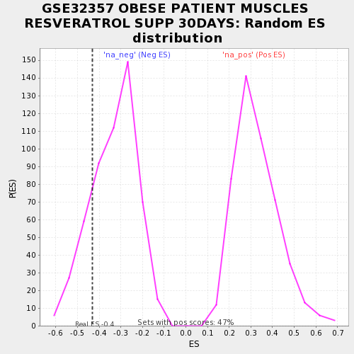

| | | Dataset | testA |
| Phenotype | NoPhenotypeAvailable |
| Upregulated in class | na_neg |
| GeneSet | GSE32357 OBESE PATIENT MUSCLES RESVERATROL SUPP 30DAYS |
| Enrichment Score (ES) | -0.43012035 |
| Normalized Enrichment Score (NES) | -1.2954774 |
| Nominal p-value | 0.1773585 |
| FDR q-value | 1.0 |
| FWER p-Value | 1.0 |
Table: GSEA Results Summary
 Fig 1: Enrichment plot: GSE32357 OBESE PATIENT MUSCLES RESVERATROL SUPP 30DAYS
Fig 1: Enrichment plot: GSE32357 OBESE PATIENT MUSCLES RESVERATROL SUPP 30DAYS
Profile of the Running ES Score & Positions of GeneSet Members on the Rank Ordered List
| PROBE | GENE SYMBOL | GENE_TITLE | RANK IN GENE LIST | RANK METRIC SCORE | RUNNING ES | CORE ENRICHMENT | | 1 | OTUD1 | | | 23 | 0.748 | -0.0214 | No |
| 2 | EIF3B | | | 43 | 0.595 | -0.0429 | No |
| 3 | PUS1 | | | 61 | -0.440 | -0.0780 | No |
| 4 | AAR2 | | | 70 | -0.494 | -0.0454 | No |
| 5 | HIRIP3 | | | 92 | -0.598 | -0.0795 | No |
| 6 | FOS | | | 147 | -0.917 | -0.2732 | Yes |
| 7 | ARRDC4 | | | 149 | -1.023 | -0.1046 | Yes |
| 8 | FAM53A | | | 151 | -1.029 | 0.0649 | Yes |
Table: GSEA details [plain text format]

Fig 2: GSE32357 OBESE PATIENT MUSCLES RESVERATROL SUPP 30DAYS: Random ES distribution
Gene set null distribution of ES for GSE32357 OBESE PATIENT MUSCLES RESVERATROL SUPP 30DAYS